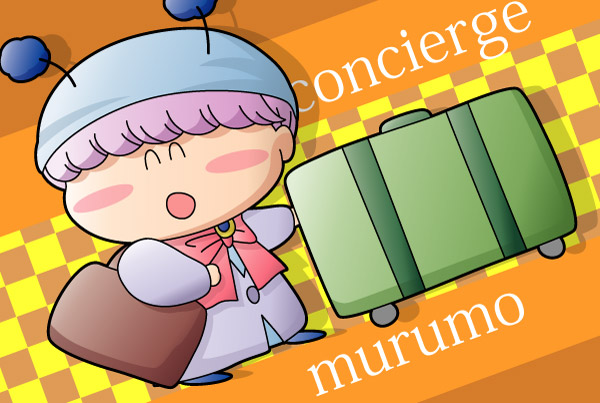

ムルモ「存分におくつろぎください、でしゅ」
3月に私用でホテルに宿泊した記念に、ホテルの部屋にて描きました。ムルモのスマイルはイラストを描いてる本人もうっとりさせてくれます（おい）。ちょっと背景の色が濃すぎたかな…。murumoという綴りも合っているのかどうか不明だし…。
さてさて、このイラストのタイトルは『腹黒コンシェルジュ』なのです(笑)。
ムルモ「チップはマシュマロを希望しましゅ」
チップを忘れたり、間違ってお金を渡したりすると、さっきまでの笑顔が裏の顔に豹変すること間違いなし！ムルモの笑顔の裏には、ムルモの計算が含まれていることを常に覚えておきましょう。(^^;
(2004/3/21)